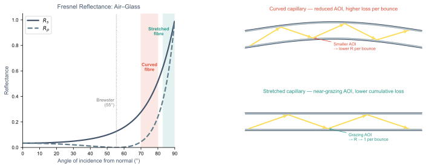

Improving Capillary Transmission by Stretching

Physically stretching the fibre keeps it straight, maintaining near-grazing angles of incidence at the glass wall where Fresnel reflectance approaches unity — reducing cumulative bounce losses along the fibre length.
A hollow capillary is an inherently leaky waveguide: light is guided by near-total reflection at the inner glass surface at very shallow (grazing) angles.
The Marcatili–Schmeltzer loss formula (L_loss ∝ a³/λ²) assumes a perfectly straight fibre. In practice, bending increases loss by reducing the angle of incidence at each wall bounce — moving away from the grazing regime where reflectance is highest.
Physically stretching the fibre removes the sag introduced by gravity and clamping, restoring the straight geometry and the associated high-AOI reflectance.
Each bounce: R slightly less than 1. After N bounces, transmitted power ∝ R^N. Keeping R close to 1 (grazing) dramatically reduces the accumulated loss over a metre-scale fibre.
This is a practical technique used in high-energy pulse delivery setups — stretching over a rigid mount or tensioning the capillary between two translation stages.